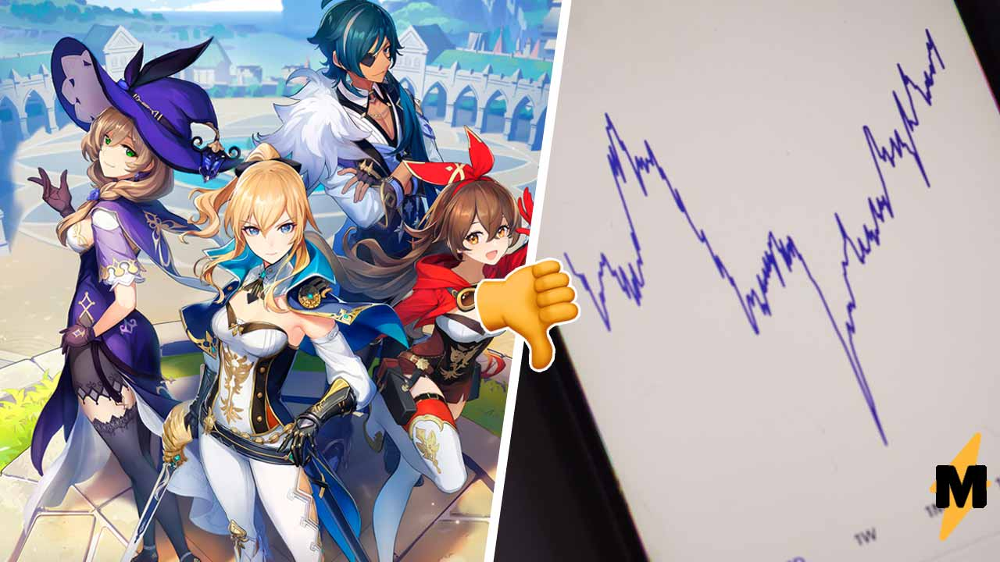
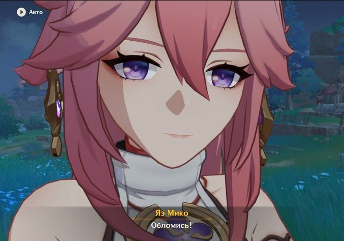
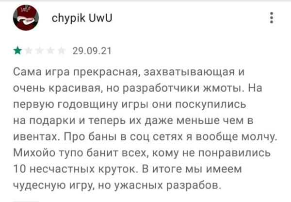
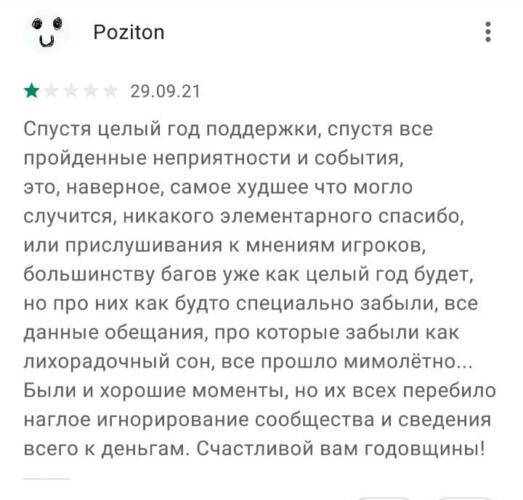
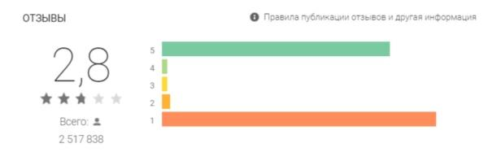

Фанаты Genshin Impact обвалили рейтинг игры в её годовщину. Хотели подарки, получили баны за критику
!!!Информация устарела!!!
Поклонники Genshin Impact за сутки обвалили рейтинг игры в Google Play с 5 до 2 баллов. Фанаты обозлились на студию miHoYo за то, что в день рождения RPG вместо значимых подарков получили концерт и онлайн-выставку фан-артов.
Приключенческая игра с открытым миром в жанре аниме Genshin Impact 28 сентября отпраздновала свой первый день рождения. RPG китайской студии miHoYo всего за год стала одной из самых популярных в мире: за последний месяц, по статистике портала Active Player, в неё заходили более 53 миллионов геймеров.
В преддверии годовщины разработчики провели онлайн-трансляцию концерта и специальное событие, посвящённое фан-артам. Правда, поклонники Genshin Impact в первую годовщину игры ожидали от miHoYo других подарков: молитвы (с помощью которых можно получить редких персонажей и оружие) и внутриигровой валюты под названием примогемы. Но разработчики надежды геймеров не оправдали. Праздничные бонусы были хуже тех, что геймеры получали при прохождении стандартных миссий.
Своё возмущение поклонники Genshin Impact высказали в твиттере.
"Genshin Impact такой типа: у нас годовщина, значит, это вы должны нам дарить подарки и донатить, а не мы вам."
Также игроки стали замечать, что miHoYo старается избавиться от критики в соцсетях.
"Михойо: банят всех, кто пишет про годовщину на официальных площадках, чистят обсуждения, скрывают то, что уже нельзя удалить."
Фан-база Genshin Impact такого отношения к себе от разработчиков не оценила. Игроки также решили высказать своё недовольство в отзывах к игре в магазинах приложений Google Play и App Store. Ранее Medialeaks писал, что поклонники протестовали против нового персонажа, забрасывая личные сообщения актрисы озвучки оскорбительными комментариями.
Сама игра прекрасная, захватывающая и очень красивая, но разработчики — жмоты. На первую годовщину они поскупились на подарки, и теперь их даже меньше, чем в ивентах. Про баны в соцсетях я вообще молчу. miHoYo тупо банит всех, кому не понравились 10 несчастных круток. В итоге мы имеем чудесную игру, но ужасных разрабов.
Игроки также обвинили miHoYo в том, что они не слушают игроков и не исправляют ошибки, но в то же время принуждают их к постоянным донатам.
Спустя целый год поддержки, спустя все пройденные неприятности и события это, наверное, самое худшее, что могло случиться, никакого элементарного «спасибо» или прислушивания к мнениям игроков, большинству багов уже как целый год будет, но про них как будто специально забыли. Все данные обещания, про которые забыли как лихорадочный сон, всё прошло мимолётно. Были и хорошие моменты, но их всех перебило наглое игнорирование сообщества и сведение всего к деньгам. Счастливой вам годовщины!
Урон, нанесённый игроками Genshin Impact, больше всего заметен по оценкам в Google Play. Рейтинг RPG всего за сутки упал с 5 до 2,8. Количество «единиц», поставленных геймерами в такое короткое время, превысило оценки с пятью звёздами, которые «копились» весь год.
На этом поклонники игры не останавливаются. В твиттере они призывают других фанов Genshin Impact продолжать забастовку — обваливать рейтинг игры и даже не играть в неё.
Используемые источники:
- Источник источник источник источник источник источник источник источник
- Длинный источник источник источник источник источник источник источник источник источник источник источник источник источник источник источник источник
- Источник источник источник источник источник источник источник источник
- Источник источник источник источник источник источник источник источник
- Длинный источник источник источник источник источник источник источник источник источник источник источник источник источник источник источник источник